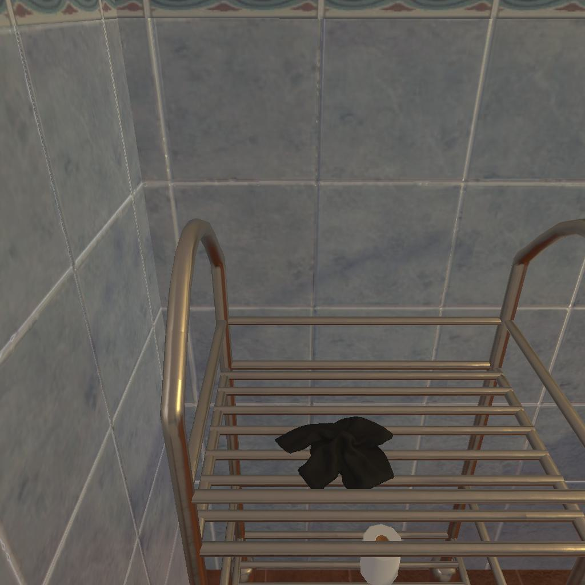
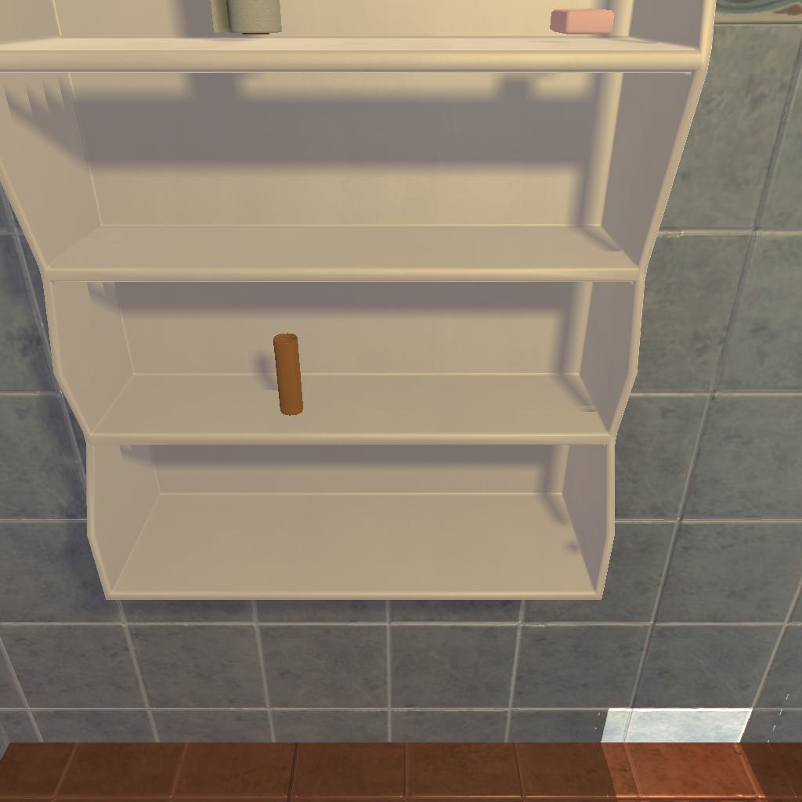

---------------------------------------------------------task: 25---------------------------------------------------------
--------------------------------------------------------------------------------------------------------------------------------------------------------------------
--------------------------------------------------------------------------------------------------------------------------------------------------------------------
Step:--------------------------------------------------------------------------9-------------------------------------------------------------------------------
----------------------------------------
VLM Prompt:
Image1:
Image2:
Image3:
**Instruction**
1. Analyze the provided images to identify all visible household objects and compare the difference between images (e.h. whether the object is opened or not and taken on hand or not), focusing on those relevant to the task description "find two dishsponge and put them in cart."
2. Use the analysis of images and the task hint "The agent must find an object of the desired type, pick it up, find the correct location to place it, put it down there, then look for another object of the desired type, pick it up, return to previous location, and put it down there with the other object." to answer the question: what is the most reasonable action in the choices for the task description "find two dishsponge and put them in cart"?
3. Decide and write the answer using the template: The answer is: (i): , where i is the real number. If there is no desired object in images, search every place based on **Initial Observation** to find the object. And if no one is exactly correct, choose a similar answer.
**Initial Observation**
You are in the middle of a room. Looking quickly around you, you can see bathtub (1), bathtubbasin (1), cart (1), toilet (1), garbagecan (1), toiletpaperhanger (1), shelf (1-4), sink (1), sinkbasin (1), handtowelholder (1)
**Answer Choices**
(1): go to bathtub 1
(2): go to bathtubbasin 1
(3): go to toilet 1
(4): go to garbagecan 1
(5): go to toiletpaperhanger 1
(6): go to shelf 2
(7): go to shelf 3
(8): go to shelf 4
(9): go to sink 1
(10): go to sinkbasin 1
(11): go to handtowelholder 1
(12): take papertowelroll 1 from shelf 1
(13): take toiletpaper 1 from shelf 1
(14): take soapbar 1 from shelf 1
(15): examine shelf 1
**Answer**
Let's think step by step by following the instructions.
----------------------------------------
----------------------------------------
Original Response:
First, we analyze the provided images for any dishsponges. Image 1 and Image 2 appear to be duplicate images showing a toilet, a cart, and what looks like a piece of clothing on the cart, but no dishsponge is visible. Image 3 shows a shelf with what looks like a toilet paper roll and a soap bar, but again, no dishsponge.
Using the task hint, we understand that we need to find dishsponges and put them in the cart. Since no dishsponge is visible in the images, we must search every place based on the Initial Observation to find the object.
Comparing the answer choices with the Initial Observation, none of the actions directly mention finding or taking a dishsponge, which is the object we need for the task. However, since dishsponges are commonly found near sinks or shelves in a bathroom setting, we can infer that examining the shelf or going to the sink could potentially lead to finding a dishsponge.
Based on this analysis, the most reasonable actions from the choices provided would be to go to shelf 2, shelf 3, or shelf 4, as these are locations where a dishsponge may be found. Since we have no specific information on which shelf might contain the dishsponge, and since shelf 1 is the only one visible in the images (which does not contain a dishsponge), we can start by examining the next shelf in sequence.
The answer is: (6): go to shelf 2.
----------------------------------------
----------------------------------------
>>> Refine Original VLM Response and Get Pure Action: go to shelf 2
----------------------------------------
-----------------------------------------------------------------
Running time: 19.67711877822876 seconds
Total Money: 15.669090000000002
-----------------------------------------------------------------
-----------------------------------------------------------------
Text Observation:You arrive at loc 7. On the shelf 2, you see a papertowelroll 1, a toiletpaper 1, and a soapbar 1.
-----------------------------------------------------------------
UNSUCCEED